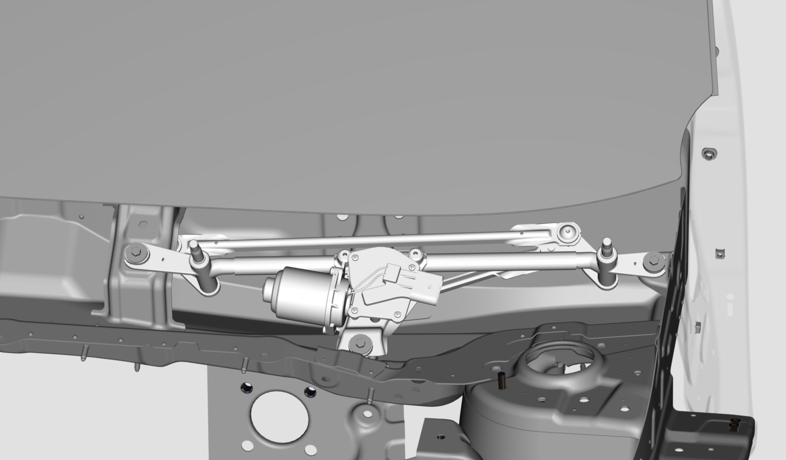
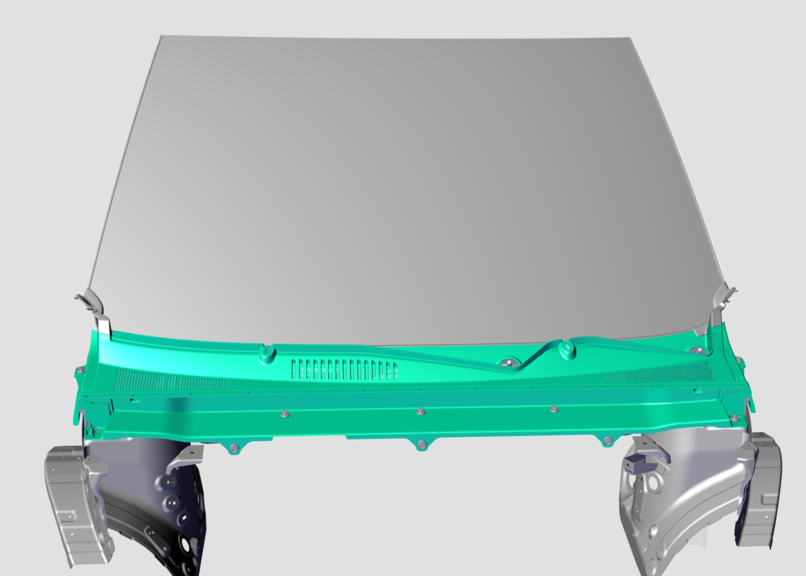
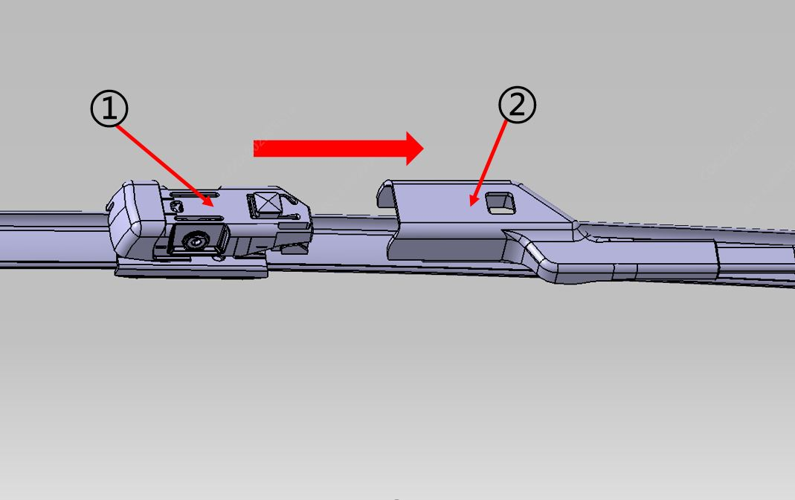
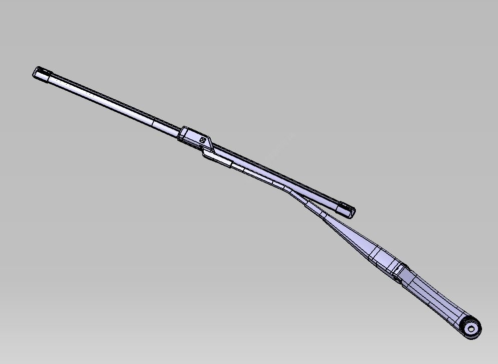
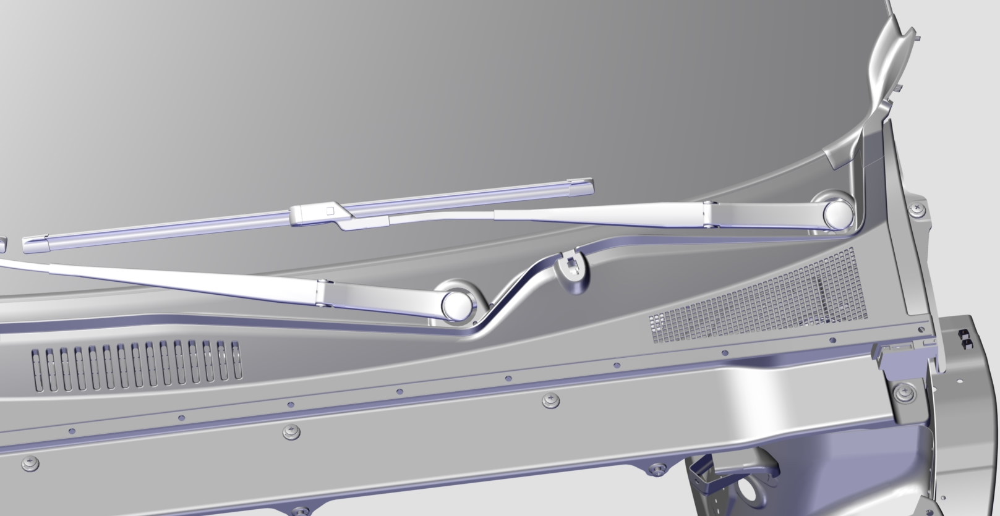
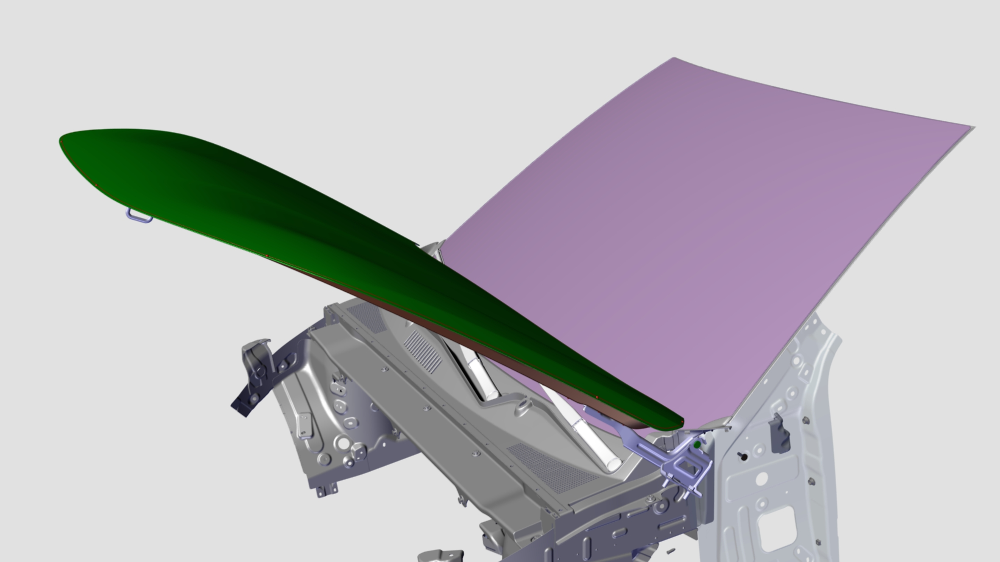
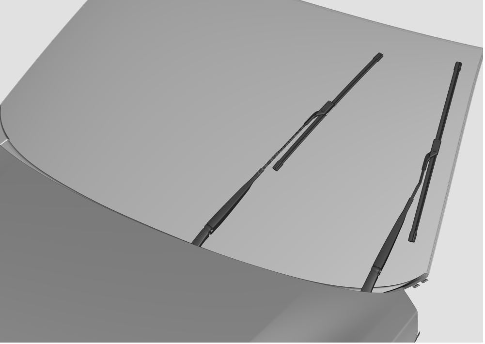
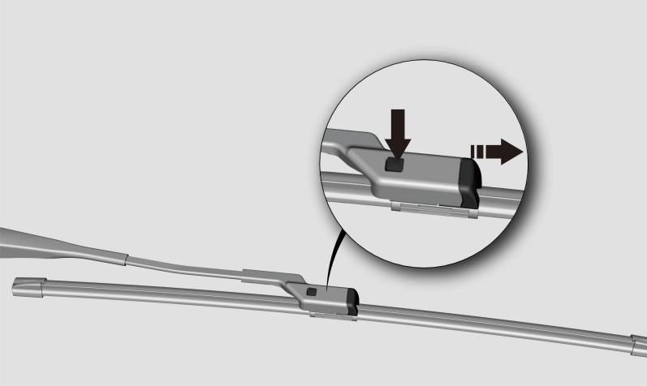

前雨刮安装与拆卸
安装
1. 刮水电动机和传动臂总成的安装：

●安装工具：10mm套筒
●力矩要求：11±2Nm
● 用3颗六角头螺栓和平垫圈组合件将刮水电动机和传动臂总成固定在暖风机压力室板焊接总成对应的安装孔上，并着色标；
● 将线束端接插件与雨刮电机接插件进行对插。
2. 安装前罩装饰件总成

3. 主、副雨刮臂分别和主、副雨刮刷进行分装。

●将刮刷的卡扣①与刮臂的卡槽②平齐，然后按图示的方向将刮刷卡进刮臂的卡槽中。(主、副雨刮刷与主、副雨刮臂的安装方式相同)
注意

4.主、副雨刮臂及刮刷总成的装配

●安装工具：14mm套筒
●力矩要求：20±2Nm
●浅按一次怀档开关灯光手柄头部的前雨刮按键（MIST档），待雨刮电机停止。以确保雨刮电机在初始位置。
●分别将主雨刮臂及刮刷总成，副雨刮臂及刮刷总成的安装孔安装至刮水电机和传动臂总成的刮臂输出轴上。
●以刮水电机和传动臂总成的刮臂输出轴为中心，按玻璃上的刮刷安装位置标记点分别调整主副刮刷的初始位置，使雨刮刷的胶条刃口放置在标记点上
●用两颗六角法兰面螺母分别紧固主、副雨刮臂及刮刷总成，并作色标；
●将刮臂孔盖分别安装在主、副刮臂上；
注意
拆卸
拆卸与安装顺序相反，如下
●抬起并固定引擎盖。

●使用一字起，取下刮臂孔盖。
●使用14mm套筒松开刮臂的两颗安装螺母，取下刮臂和刮刷总成。
●拆除前罩装饰件总成。 拆卸和安装前罩装饰件总成
●拆卸雨刮电机及传动臂总成：首先取下与雨刮电机连接的线束，然后用10mm套筒分别松开固定雨刮电机的三颗六角头螺栓和平垫圈组合件，取下雨刮电机总成。
雨刮刷的拆卸方法
1. 进入维修模式
车辆上电后，在中控显示屏上点击【车辆中心】-【安全维护】-【雨刮维修位置】 ，功能开启，前雨刮臂及刮刷总成将移动并保持在维修位置


2. 在刮臂和刮刷连接处，紧握刮臂杆，手指用力按下刮刷按钮（如图方向），并保持。

3. 沿上图所示方向将刮刷拔出，完成雨刮刷的拆卸和更换。
4.更换完成后，在中控显示屏上再次点击【车辆中心】-【安全维护】-【雨刮维修位置】 ，功能关闭，前雨刮臂及刮刷总成回到初始位置